Dieses Handbuch beschreibt wörds 0.9.0, eine frühere Version. Handbuch der aktuellen Version (0.11.1) · Frühere Versionen: 0.11.0, 0.10.0
wörds – Benutzerhandbuch
wörds ist eine Karteikarten-App für das, was man in einer Sprache täglich üben muss: Verbformen und Wörter des Alltags. Jede Karte zeigt eine Seite. Du antwortest im Kopf, drehst die Karte um, prüfst dich ehrlich und bewertest dich. wörds berechnet dann, wann du die Karte wiedersehen solltest.
wörds funktioniert offline, braucht kein Konto und zeigt keine Werbung. Mitgeliefert wird Italienisch für Deutschsprachige (Verben A1 und 120 Wörter des Alltags); weitere Sprachpakete lassen sich aus einer Datei oder von GitHub hinzufügen.
Dieses Handbuch beschreibt wörds 0.9.0. Die Bildschirmfotos zeigen das Farbschema Terrakotta; deine App kann andere Farben haben.
Inhalt
Erste Schritte
Beim ersten Start installiert wörds die mitgelieferten Inhalte und fragt, was du lernen möchtest. Wähle ein Sprachpaar und tippe auf Los geht's. Weitere Sprachpaare kannst du später installieren und jederzeit wechseln.
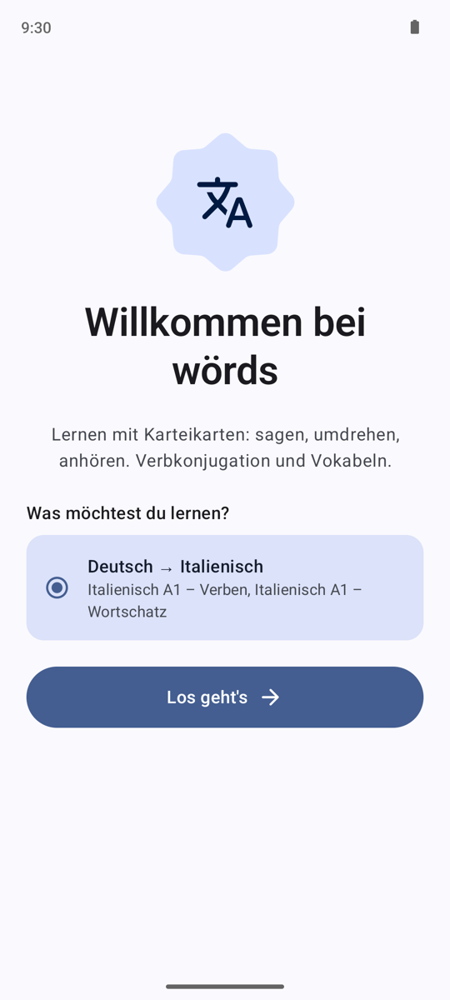
Die App hat drei Bereiche, die du immer über die Leiste unten erreichst (auf Tablets: an der Seite):
| Bereich | Wofür |
|---|---|
| Bibliothek | Inhalte ansehen und eine Sitzung starten |
| Fortschritt | Die heutige Wiederholung und was du bisher gelernt hast |
| Einstellungen | Sprache, Farben, Aussprache, tägliche Wiederholung, Sprachpakete |
Die Bibliothek
Die Bibliothek zeigt alles, was du im aktuellen Sprachpaar lernen kannst. Mit den Chips oben wechselst du zwischen den installierten Paketen, zum Beispiel Verben (Konjugation) und Wortschatz (Vokabeln). Jedes Paket ist in Abschnitte (Lektionen) gegliedert, jeder Abschnitt in Einträge: ein Verb mit all seinen Formen oder ein Wort.
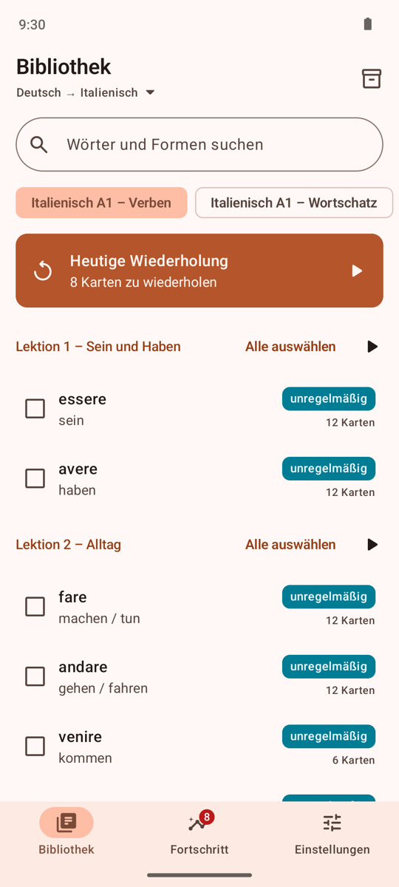

- Suchen findet Wörter und Verbformen im ausgewählten Paket.
- Heutige Wiederholung oben startet deine tägliche Wiederholung oder setzt sie fort (siehe Heutige Wiederholung).
- Letzte Sitzung fortsetzen erscheint, solange eine Sitzung offen ist; sie geht genau dort weiter, wo du aufgehört hast.
- Die ▶-Taste neben einem Abschnitt startet den ganzen Abschnitt.
- Sind zwei oder mehr Sprachpaare installiert, tippst du auf das Sprachpaar unter dem Titel, um zu wechseln.
- Das Kisten-Symbol oben rechts öffnet die Sprachpakete.
Willst du nur einige Einträge lernen, hakst du sie an. Alle auswählen hakt einen ganzen Abschnitt an; Leeren oben hebt die Auswahl auf. Die Taste unten zeigt, wie viele Einträge du gewählt hast.
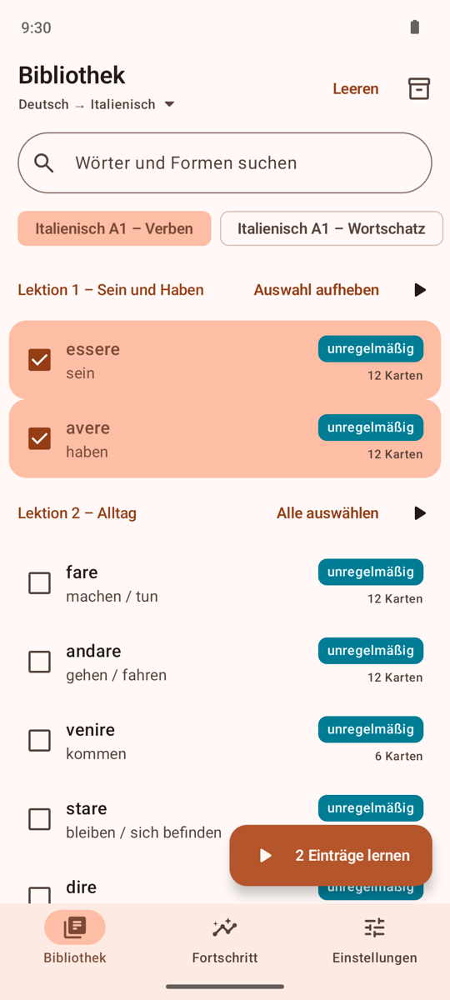
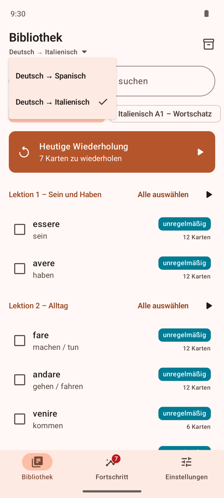
Eine Sitzung starten
Bevor eine Sitzung beginnt, legst du in einem Blatt fest, wie du üben willst:
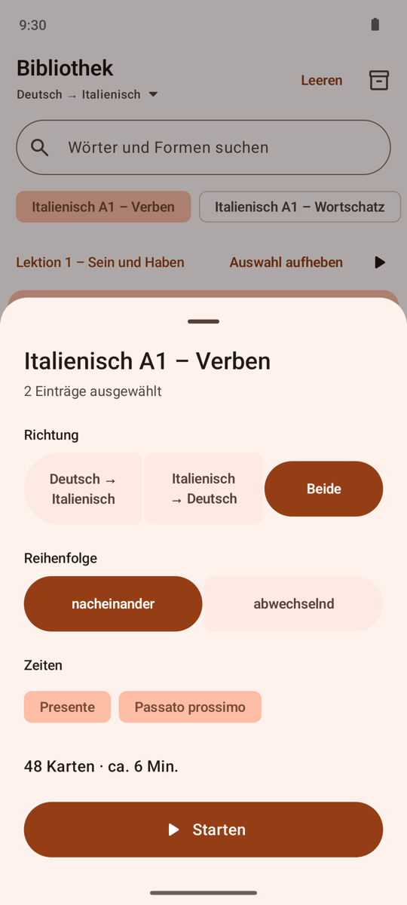
- Richtung: von deiner Sprache in die Lernsprache (Deutsch → Italienisch: du siehst „ich bin" und sagst „io sono"), umgekehrt oder Beide.
- Reihenfolge (nur bei Beide): nacheinander übt alle Karten eines Eintrags erst in der einen, dann in der anderen Richtung. abwechselnd fragt jede Karte im Wechsel in beiden Richtungen ab.
- Zeiten (nur bei Verben): welche Zeitformen du üben willst.
Das Blatt zeigt, wie viele Karten das sind und wie lange es ungefähr dauert. Tippe auf Starten.
Mit einer Karte lernen
Eine Karte zeigt eine Aufgabe. Sag oder denk die Antwort, dann tippe auf die Karte, um sie umzudrehen.
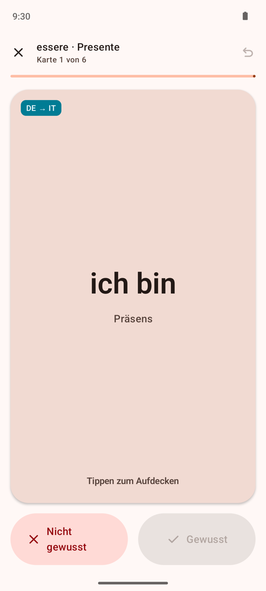

Dann bewertest du dich:
- Gewusst – oder die Karte nach rechts wischen.
- Nicht gewusst – oder die Karte nach links wischen.
Sei ehrlich: wörds plant deine Wiederholungen nach diesen Antworten. Deshalb ist Gewusst auch erst möglich, wenn die Antwort zu sehen ist. Tippst du vor dem Umdrehen auf Nicht gewusst, zeigt die Karte zuerst die Antwort; ein zweites Tippen auf Nicht gewusst geht weiter.
Außerdem auf dem Kartenbildschirm:
- Der Lautsprecher spielt die Aussprache mit der Sprachausgabe deines Geräts ab. Fehlt die Stimme für die Sprache, bietet wörds an, sie zu installieren.
- Rückgängig (der Pfeil oben rechts oder die Meldung unten) nimmt die letzte Antwort zurück.
- Das Schild oben links zeigt die Richtung, zum Beispiel DE → IT.
- ✕ schließt die Sitzung. Sie bleibt offen, und du kannst sie später in der Bibliothek fortsetzen.
Vokabelkarten zeigen das Wort und auf der Antwortseite Artikel, Plural und, wenn das Paket einen hat, einen Beispielsatz. Viele Wörter des mitgelieferten Italienisch-Pakets haben außerdem ein Bild ihrer Bedeutung. In den Einstellungen kannst du die Bilder ausschalten.

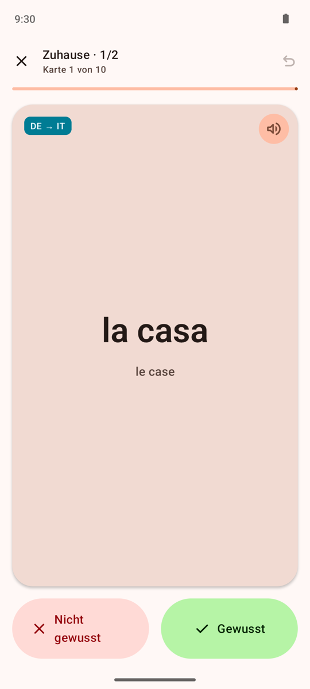
Ende einer Sitzung
Eine Sitzung ist in Gruppen aufgeteilt: eine pro Verb und Zeit oder eine Handvoll Wörter. Nach jeder Gruppe zeigt wörds, wie es lief und was als Nächstes kommt. Am Ende siehst du das Ergebnis der ganzen Sitzung.
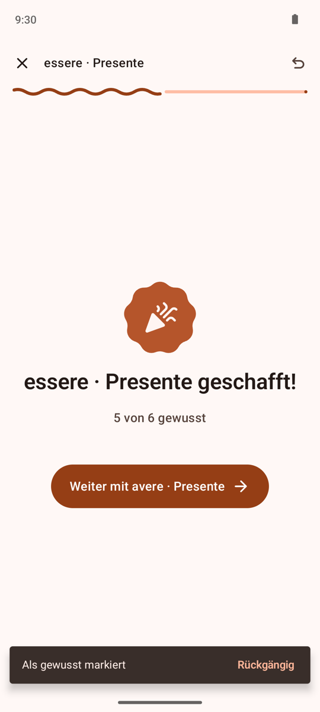
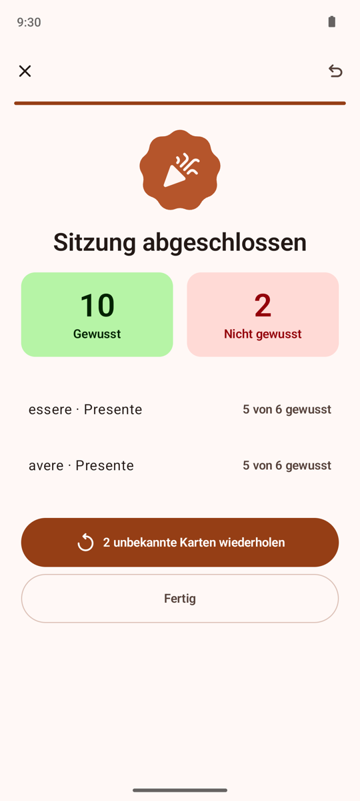
Unbekannte Karten wiederholen startet eine kurze Sitzung nur mit den Karten, die du nicht wusstest. Fertig führt zurück in die Bibliothek.
Heutige Wiederholung
wörds arbeitet mit verteilter Wiederholung: Eine Karte, die du gut kannst, kommt erst nach langer Pause wieder, eine schwierige bald. Dahinter steckt FSRS, ein modernes Planungsverfahren, das für jede Karte schätzt, wie wahrscheinlich du sie noch weißt.
Jeden Tag stellt wörds die heutige Wiederholung zusammen:
- fällige Karten, zuerst die, die du am ehesten vergisst, und
- einige neue Karten aus Paketen, mit denen du schon angefangen hast (20 am Tag, wenn du nichts änderst).
Du startest die Wiederholung oben in der Bibliothek oder im Bereich Fortschritt. Eine Zahl am Bereich Fortschritt zeigt, wie viele Karten warten. Lange Wiederholungen sind in Blöcke zu 20 Karten aufgeteilt. Eine unterbrochene Wiederholung kannst du am selben Tag fortsetzen. Ein Lerntag beginnt um 4 Uhr morgens, damit eine Sitzung spät am Abend noch zu diesem Tag zählt.
Jede Antwort fließt in deinen Plan ein: in einer normalen Sitzung genauso wie in der Wiederholung.
Fortschritt
Der Bereich Fortschritt zeigt die heutige Wiederholung und für jedes Paket, wie weit du bist. Tippe auf ein Paket, um dieselben Zahlen pro Abschnitt zu sehen; innerhalb eines Abschnitts kannst du seine Gruppen einblenden.
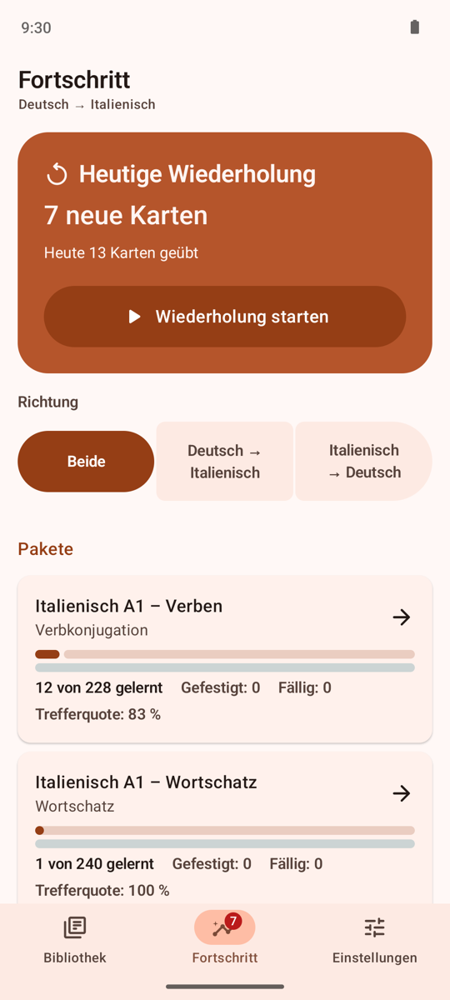

| Angabe | Bedeutung |
|---|---|
| gelernt | Karten, die du mindestens einmal beantwortet hast |
| Gefestigt | Karten, die du auch nach drei Wochen oder mehr noch wüsstest |
| Fällig | Karten, die jetzt zur Wiederholung anstehen |
| Trefferquote | Anteil der Antworten mit Gewusst |
Mit den Tasten unter Richtung siehst du die Zahlen für eine Richtung oder für beide.
Sprachpakete
Alle Inhalte kommen in Sprachpaketen. Du öffnest sie über das Kisten-Symbol in der Bibliothek oder über Einstellungen → Sprachpakete.
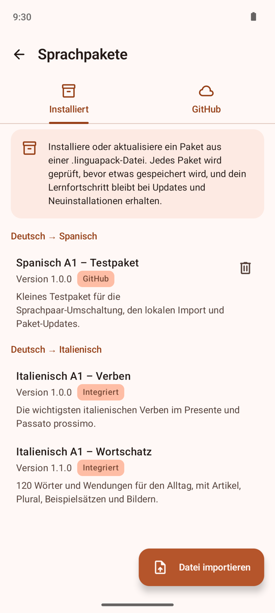
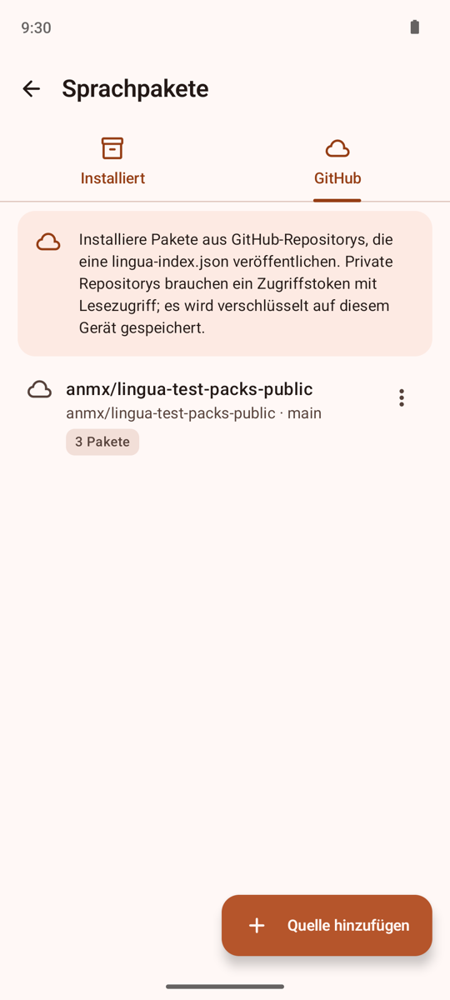
Installiert listet deine Pakete nach Sprachpaar, mit Version und Herkunft (Integriert, Importierte Datei oder GitHub).
- Datei importieren installiert oder aktualisiert ein Paket aus einer
.linguapack-Datei, zum Beispiel aus deinen Downloads. - Das Papierkorb-Symbol entfernt ein Paket. Dein Lernfortschritt bleibt erhalten und ist wieder da, wenn du das Paket erneut installierst. Mitgelieferte Pakete lassen sich nicht entfernen.
GitHub installiert Pakete aus GitHub-Repositorys, die ein Paketverzeichnis (lingua-index.json) veröffentlichen:
- Tippe auf Quelle hinzufügen und gib Inhaber und Namen des Repositorys ein. Du kannst auch einen GitHub-Link in das Feld Inhaber einfügen. Branch und Ordner sind optional.
- Für ein privates Repository fügst du ein Fine-grained-Zugriffstoken hinzu, das nur Lesezugriff auf die Inhalte dieses Repositorys hat. wörds speichert es verschlüsselt, mit einem Schlüssel, der dein Gerät nie verlässt. Ein gespeichertes Token anzeigen, ersetzen oder löschen geht nur mit Fingerabdruck, Gesicht oder Displaysperre.
- Speichere. wörds zeigt die Pakete, die das Repository anbietet. Tippe auf Installieren.
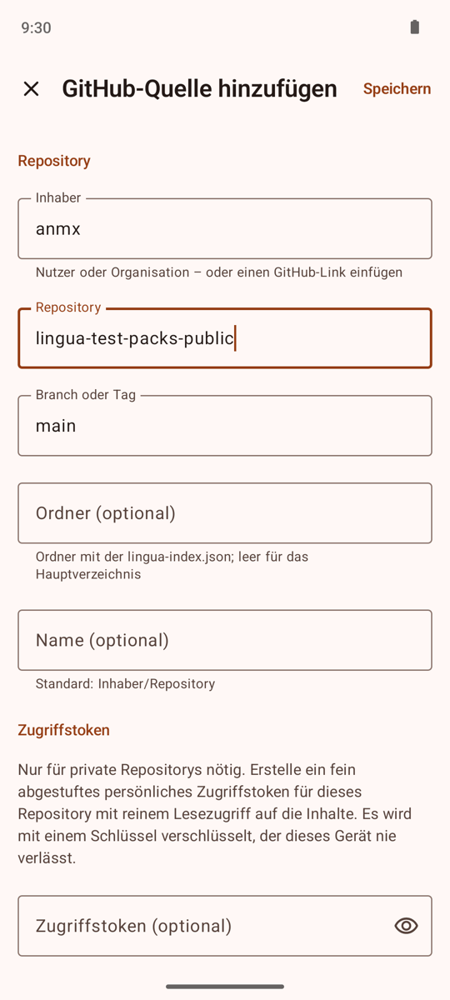
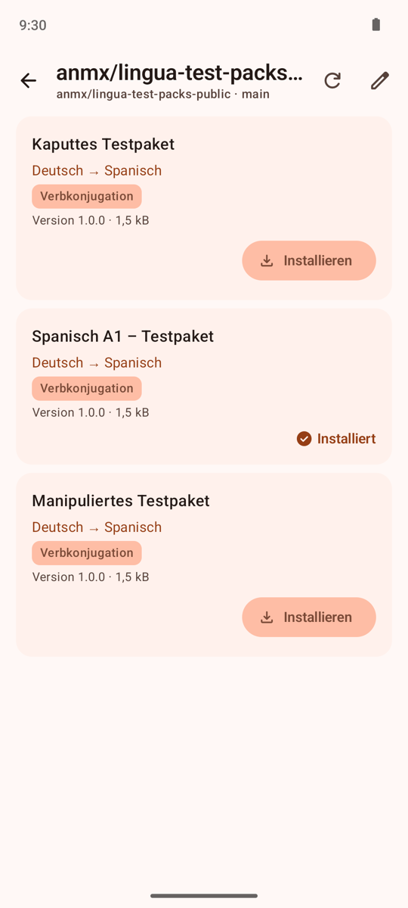
Einmal am Tag prüft wörds im WLAN, ob deine Quellen neue Versionen haben, und zeigt dann Aktualisieren an. Große Downloads laufen mit einer Benachrichtigung im Hintergrund weiter.
Jedes Paket wird geprüft, bevor etwas gespeichert wird. Eine beschädigte Datei, ein Paket, das nicht zu seiner Prüfsumme passt, oder Inhalt, der gegen die Regeln verstößt, wird abgelehnt, und wörds sagt dir, warum. Auf deinem Gerät ändert sich dann nichts.

Einstellungen

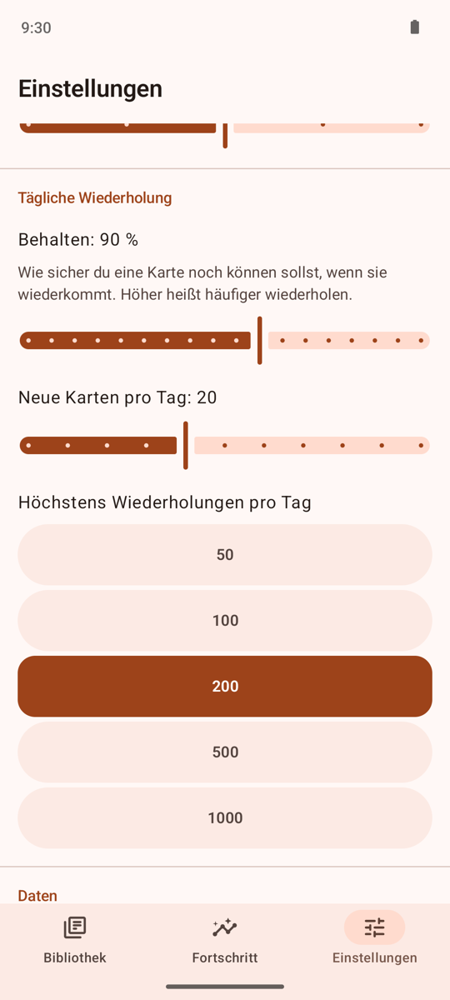
Sprache
- App-Sprache: wie im System, oder immer Deutsch oder Englisch.
Darstellung
- Design: hell, dunkel oder wie auf deinem Gerät eingestellt.
- Farbschema: die Farben deines Hintergrundbilds (ab Android 12), eines von sechs Farbschemata oder eine eigene Farbe. Die Farben folgen der Kontrasteinstellung des Systems (ab Android 14).
- Bilder auf Karten anzeigen schaltet die Bilder auf Vokabelkarten ein oder aus.
- Animationen: wie auf deinem Gerät eingestellt, reduziert oder vollständig.
Aussprache
- Automatisch abspielen spricht die Antwort, sobald eine Karte umgedreht wird.
- … beim Anzeigen abspielen spricht die Lernsprache, sobald eine Karte sie auf der Vorderseite zeigt.
- Sprechtempo macht die Stimme langsamer oder schneller.
Tägliche Wiederholung
- Behalten: wie sicher du eine Karte noch können sollst, wenn sie wiederkommt (80 bis 97 %, normalerweise 90 %). Höher heißt häufiger wiederholen.
- Neue Karten pro Tag und Höchstens Wiederholungen pro Tag begrenzen, wie viel die tägliche Wiederholung enthält.
Daten
- Sprachpakete öffnet die Paketverwaltung.
- Lernfortschritt zurücksetzen löscht alle Antworten und Sitzungen. Installierte Pakete bleiben. Das lässt sich nicht rückgängig machen.
Über wörds
- Open-Source-Lizenzen listet die Bibliotheken, mit denen wörds gebaut ist; tippe auf eine, um ihre Lizenz zu lesen.
Eigene Farbe: Wähle Farbton und Farbigkeit (oder gib einen Hex-Code ein) und einen Stil. Die Vorschau zeigt das Ergebnis hell und dunkel.


Tablets und Foldables
Auf großen Bildschirmen wandert die Navigation an die Seite, und die GitHub-Quellen zeigen die Liste der Quellen und die Pakete der gewählten Quelle nebeneinander. Auf einem halb geöffneten Foldable (Tischmodus) liegt die Karte über dem Knick und die Bewertungstasten darunter – so kannst du mit dem Gerät auf dem Tisch lernen.

Barrierefreiheit und Datenschutz
- wörds funktioniert mit TalkBack, großer Schrift, hohem Kontrast, reduzierten Animationen, Tastatur und D-Pad. Auf einer Hardwaretastatur geht Esc zurück.
- wörds braucht kein Konto und funktioniert offline. Ins Internet geht es nur, um mit GitHub zu sprechen, und nur, wenn du GitHub-Quellen nutzt. Es gibt keine Werbung und kein Tracking.
- Dein Fortschritt und deine Einstellungen sind Teil der Sicherung deines Geräts. Zugriffstokens nicht: Nach einer Wiederherstellung fragt wörds erneut danach.
Fragen und Probleme
Eine Karte hat keinen Ton. Deinem Gerät fehlt die Stimme der Sprachausgabe für diese Sprache. Tippe in der Meldung auf der Karte auf Installieren oder füge die Stimme in den Sprachausgabe-Einstellungen deines Geräts hinzu.
Ein Paket wurde nicht installiert. Die Meldung sagt, was damit nicht stimmt. Auf deinem Gerät wurde nichts geändert. Bitte den Autor des Pakets um eine korrigierte Fassung.
GitHub meldet einen Fehler. Prüfe deine Verbindung. Bei einem privaten Repository prüfe, ob das Zugriffstoken noch gültig ist und Lesezugriff auf die Inhalte des Repositorys hat. Ist das Anfragelimit von GitHub erreicht, sagt die Meldung, wann du es wieder versuchen kannst.
Ich will von vorn anfangen. Einstellungen → Lernfortschritt zurücksetzen löscht alle Antworten; die Pakete bleiben installiert.